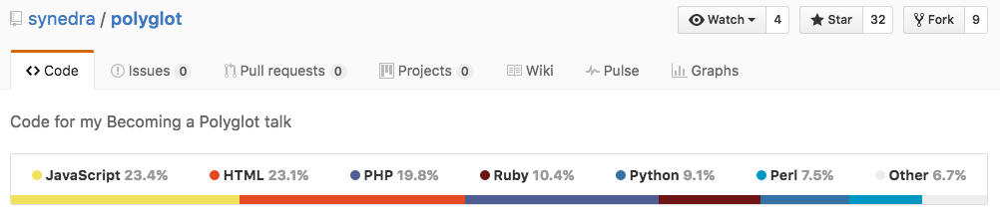

Математические модели вычислений
Вводное занятие
Обзор курса. Предпосылки к задаче формальной верификации, актуальность. Современные методы верификации программ (рецензирование, тестирование, статический анализ, формальная верификация) и их интеграция в процессы разработки
Я — Максим Александрович Кривчиков, к.ф.-м.н., с.н.с. МГУ имени М. В. Ломоносова
Материалы курса: https://maxxk.github.io/formal-models/
Обзор курса
В этом семестре — более теоретические вопросы:
- каким образом в принципе можно что-то доказывать про программы
- какие математические модели используются для описания вычислений
- теоретические положения программирования с зависимыми типами этот подход тесно связан с активно развивающимся направлением современной математики — теорией типов
В следующем семестре («Математические модели программ и языков программирования», на английском языке) — практические вопросы:
- как описывать семантику программ и языков программирования
- как описывать отдельные аспекты исполнения программ
- как выполнять доказательства свойств программ
- что делать, чтобы такие доказательства было реально получить на практике (предметно-ориентированные языки и вывод типов)
- разбор существующих результатов (компилятор языка C CompCert, ядро ОС SeL4)
Общая информация
Основные материалы для подготовки — по презентациям; по основным темам будут ссылки на литературу для расширенного изучения (в том числе — список литературы к билетам).
Любые возникающие вопросы лучше задавать прямо по ходу занятия.
Зачёт/экзамен
Курс — по выбору кафедры Вычислительной математики; студенты с других кафедр могут сдавать его как спецкурс. По опыту прошлого года, можно сдавать зачёт или экзамен.
В рамках курса будут даваться задания для самостоятельного выполнения «со звёздочками». По итогам курса: 10* — «автомат» (попрошу ответить на один вопрос, но ответ не будет влиять на оценку), 6* — нужно ответить на один вопрос, 3* — на два вопроса, менее 3* — на три вопроса из билета.
Принимаются предложения по семестровым проектам и инициативным заданиям, не включённым в список, но позволяющим лучше иллюстрировать темы курса.
Похожие курсы в других университетах мира
Первый семестр:
- CMU (US) 15-819 Homotopy Type Theory
- Университет Стокгольма (Швеция) MM8036 ht15 Type Theory
- Университет Неймегена (Нидерланды) IMC010: Type Theory and Coq
- Университет Ноттингема (Великобритания) G52IFR Introduction to Formal Reasoning
Второй семестр:
- Cornell University (US) CS4110–CS6110
- University of Edinburgh INFR11114 Types and Semantics for Programming Languages
- University of Texas in Dallas CS 6371: Advanced Programming Languages
Введение
Программы окружают нас
Например, в следующих сферах жизни общества:
- развлечения
- рабочие места
- коммуникации
- транспорт
- медицина
- наука
- производство
- энергетика
- вооружение
Программы пишут на разных языках программирования

С JavaScript:
- 5.9% (74) без языков программирования (ЯП),
- 40.5% (509) используют один ЯП,
- 26.8% (337) используют два ЯП,
- 26.8% (336) используют три и более ЯП.
Без JavaScript и репозиториев без языков
- 51.6% (239) используют один ЯП,
- 25.5% (118) используют два ЯП,
- 22.8% (106) используют три и более ЯП.
Данные получены по 1256 репозиториям GitHub, наиболее популярных по количеству голосов пользователей и по количеству производных репозиториев в 2013 году.
Программы модифицируются и усложняются
GNU gzip (утилита для сжатия данных)
версии 1.2.4 – 1.6 (1993–2013) × 6 файлов, × 7 строк (34 ⟶ 216 файлов, 5.8 ⟶ 42 тыс. строк кода)
Ядро ОС FreeBSD для архитектуры i386
версии 2.0.5 – 8.4 (1995–2013)
× 8 файлов, × 12 строк (1066 ⟶ 8860 файлов, 280 ⟶ 3380 тыс. строк кода)
Данные получены утилитой CLOC 1.60 для следующих типов файлов: C, C++, C/C++ Header
Программы содержат ошибки
Coverity Scan Open Source Report 2013:
Статический анализ кода 741 Open Source проекта от ≈10 тыс. строк до ≈8 млн строк, в среднем ≈340 тыс. строк на проект.
Плотность обнаруженных ошибок: 0.59 на 1 тыс. строк кода. Для небольших проектов масштаба gzip (42 тыс. строк) — в среднем 24 ошибки обнаружено.
В.В. Липаев отмечал [1]:
- высококачественное ПО имеет плотность порядка 0.20 ошибок на 1 тыс. строк кода
- существующими средствами достижима минимальная плотность порядка 0.05 ошибок на 1 тыс. строк кода
[1] Липаев В.В. Программная инженерия. Методологические основы: Учебник
Ошибки в программах могут приводить к серьёзным последствиям
Уязвимости в ПО
- OpenSSL Heartbleed (CVE-2014-0160) — значительная часть TLS-серверов в Интернет (популярные дистрибутивы Linux — Debian-based, RedHat-based; OpenBSD, FreeBSD, NetBSD, роутеры Cisco, Juniper, …) имели уязвимость в течение более 1 года
- (подставьте уязвимость, о которой вы читали за последние полгода, за исключением различных тайминг-атак)
Недокументированные возможности
- Volkswagen (2015) — занижались данные по выбросам вредных веществ дизельными двигателями, компанию ожидает штраф до 18 млрд. долл.
...и даже к катастрофическим
Уязвимости в ПО
- Stuxnet, Иранская ядерная программа (2009) — предположительно, повреждены центрифуги, используемые при обогащении урана
Некорректная работа ПО
- «Фобос-Грунт» (2011) — утрачена автоматическая межпланетная станция, ущерб ≈5 млрд руб.
- Панама, установки лучевой терапии (2000-2001) — пострадало 28 человек, погибло не менее 5
- Therac-25, установки лучевой терапии (1985-1987) — 6 пострадавших, 3 погибших
- FADEC (Chinook HC.2), отказ ПО управления двигателем вертолёта — одна из вероятных причин крушения в 1994 г. — 29 погибших
Фобос-Грунт
Фобос-Грунт (Wikipedia)
2011 г. 9 ноября — запуск и ожидаемое выведение на траекторию полёта к Марсу:
00:16:02.871 (МСК) — старт
00:27:31 (T+688 сек) — раскрытие солнечных батарей, приём телеметрии, ориентация, заряд батарей
02:55:47.981 — первое включение маршевой двигательной установки АМС не состоялось; блок баков сброшен не был; после длительных поисков с привлечением российских и американских систем контроля космического пространства станция была обнаружена; вероятно, произошёл сбой при переходе от ориентации по Солнцу к ориентации по звёздам; возможно, что не прошла команда датчиков на включение двигательной установки; по уточнённым параметрам орбиты и запасу энергии, имеется 2-недельный запас времени, чтобы заново передать в АМС программу полёта;
...
2011 г. 10 ноября — продолжение попыток установить связь с АМС: Осуществлено несколько безуспешных попыток установить связь с межпланетной станцией; попытки будут продолжены. ЕКА подключает свои станции, но тоже безуспешно.
...
2012 г. 15 января, 21:40…22:10 (МСК), 1097-й зафиксированный виток орбиты — снижение АМС «Фобос-Грунт» в плотные слои атмосферы, прекращение существования (аэродинамический перегрев, механическое разрушение и сгорание), возможное падение несгоревших фрагментов в южной части Тихого океана, Южной Америке и западной части Атлантического океана (заключение Роскосмоса на основе отсутствия аппарата на орбите по данным от средств контроля космического пространства).
Фобос-Грунт (GeekTimes, IEEE Spectrum)
The report blames the loss of the probe on memory chips that became fatally damaged by cosmic rays. The probe died so suddenly that it didn’t even send an error message, but investigators concluded the only plausible failure mechanism was the simultaneous disabling of two identical chips in the dual-computer control system, causing both to restart simultaneously. This in turn led to the autopilot going into “safe mode” while maintaining the spacecraft’s orientation to the sun. (That reorientation was observed in the ensuing days as thruster firings disturbed the probe’s orbit.)
Phobos-Grunt was supposed to await further instructions from Earth, but it never received them; in an incredible design oversight, the probe could receive emergency instructions only after a successful departure from parking orbit.
Toyota
- However, on October 24, 2013, a jury ruled against Toyota and found that unintended acceleration could have been caused due to deficiencies in the drive-by-wire throttle system or Electronic Throttle Control System (ETCS). Michael Barr of the Barr Group testified that NASA had not been able to complete its examination of Toyota's ETCS and that Toyota did not follow best practices for real time life critical software, and that a single bit flip which can be caused by cosmic rays could cause unintended acceleration. As well, the run-time stack of the real-time operating system was not large enough and that it was possible for the stack to grow large enough to overwrite data that could cause unintended acceleration. (Wikipedia)
Toyota (EDN Network)
Barr's ultimate conclusions were that:
- Toyota’s electronic throttle control system (ETCS) source code is of unreasonable quality.
- Toyota’s source code is defective and contains bugs, including bugs that can cause unintended acceleration (UA).
- Code-quality metrics predict presence of additional bugs.
- Toyota’s fail safes are defective and inadequate (referring to them as a “house of cards” safety architecture). The ECM software formed the core of the technical investigation. What follows is a list of the key findings.
- Mirroring (where key data is written to redundant variables) was not always done. This gains extra significance in light of …
- Stack overflow. Toyota claimed only 41% of the allocated stack space was being used. Barr's investigation showed that 94% was closer to the truth. On top of that, stack-killing, MISRA-C rule-violating recursion was found in the code, and the CPU doesn't incorporate memory protection to guard against stack overflow.
Toyota
- Two key items were not mirrored: The RTOS' critical internal data structures; and—the most important bytes of all, the final result of all this firmware—the TargetThrottleAngle global variable.
- Although Toyota had performed a stack analysis, Barr concluded the automaker had completely botched it. Toyota missed some of the calls made via pointer, missed stack usage by library and assembly functions (about 350 in total), and missed RTOS use during task switching. They also failed to perform run-time stack monitoring.
- Unintentional RTOS task shutdown was heavily investigated as a potential source of the UA. As single bits in memory control each task, corruption due to HW or SW faults will suspend needed tasks or start unwanted ones. Vehicle tests confirmed that one particular dead task would result in loss of throttle control, and that the driver might have to fully remove their foot from the brake during an unintended acceleration event before being able to end the unwanted acceleration.
- A litany of other faults were found in the code, including buffer overflow, unsafe casting, and race conditions between tasks.
Airbus (ArsTechnica, BBC)
As Ars reported on May 19, Airbus had issued a warning to its military customers about a potential software problem in the engine control software for the A400M. The release of the exact cause of the crash, however, had been delayed because a Spanish magistrate placed the flight data recorders from the aircraft under seal. Airbus has since been able to obtain the flight data, which Lahoud said confirms that the engine control software had been improperly configured during the installation of the engines on the ill-fated aircraft.
"The black boxes attest to that," Lahoud told Handelsblatt. "There are no structural defects, but we have a serious quality problem in the final assembly." The error was not in the code itself, but in configuration settings programmed into the electronic control unit (ECU) of the engines.
It said the focus of the inquiry was a theory that files known as "torque calibration parameters" had been accidentally deleted during a software installation process ahead of the plane's first flight. A source later confirmed this to the BBC. The control systems of the A400M aircraft are heavily automated. Each engine is run by a separate computer called an Electronic Control Unit. The ECUs take the pilot's inputs and make the engines they control respond in the optimum way. The parameter files are used by the ECUs to interpret sensor readings about the turning force generated by each engine - the torque - which is used to make the attached propellers spin. Without the files, the ECUs cannot make sense of this data.
Heartbleed
Heartbleed
Heartbleed (OpenSSL Git)
diff --git a/ssl/d1_both.c b/ssl/d1_both.c
index 7a5596a..2e8cf68 100644 (file)
@@ -1459,26 +1459,36 @@ dtls1_process_heartbeat(SSL *s)
unsigned int payload;
unsigned int padding = 16; /* Use minimum padding */
- /* Read type and payload length first */
- hbtype = *p++;
- n2s(p, payload);
- pl = p;
-
// ...
+ /* Read type and payload length first */
+ if (1 + 2 + 16 > s->s3->rrec.length)
+ return 0; /* silently discard */
+ hbtype = *p++;
+ n2s(p, payload);
+ if (1 + 2 + payload + 16 > s->s3->rrec.length)
+ return 0; /* silently discard per RFC 6520 sec. 4 */
+ pl = p;Необходим контроль качества программных продуктов
- верификация
- процесс, целью которого является показать соответствие продукта, сервиса или системы требованиям, спецификациям и другим условиям, которые накладываются на продукт
- валидация
- процесс, целью которого является определить адекватность продукта, сервиса или системы потребностям заказчика
Рецензирование (code review)
— экспертный контроль качества кода.
- Формализованный процесс (например, Fagan inspection)
- отдельная стадия разработки
- большое количество участников и ролей
- несколько этапов
- критерии
- Неформализованный процесс
- рецензирование «из-за спины»
- наборы изменений по email
- парное программирование
- средства рецензирования (например, Reviewable или встроенные в GitHub, GitLab)
- pull-requests
Рецензирование в Mozilla
Проект Servo (перспективный параллельный движок Web-браузера)
- разработка ведётся на GitHub
- все изменения в код вносятся в отдельных ветках, которые вливаются в основную после рецензирования
Пример запроса на внесение изменений (pull request) с рецензией: Prefetch img, scripts and stylesheets during parsing
Рецензирование в Chromium
Пример набора изменений с рецензией: https://codereview.chromium.org/1234223005/#ps260001
Рецензирование в ядре ОС Linux
Для ядра ОС Linux (десятки тысяч разработчиков) используется распределённая система на основе email. По словам ведущих разработчиков, никакие другие существующие средства не работают на таком масштабе.
Пример набора изменений с рецензией: https://lkml.org/lkml/2015/10/1/521
Средства рецензирования в GitHub
(Динамическое) тестирование
- процесс исследования, выполняемый с целью предоставления «заказчикам» информации о качестве продукта или сервиса.
- (отдельная большая тема)
- классификации:
- ручное или автоматизированное
- методы чёрного/белого/серого ящика
- модульное (юнит-) тестирование, интеграционное, интерфейсное, системное, приёмочное
- регрессионное тестирование
- smoke-тестирование, sanity-тестирование
- функциональное или нефункциональное тестирование (производительность, безопасность, живучесть, удобство использования)
Автоматизированные модульные тесты
describe("simple parsers", function() {
it("regex", () => {
const p = pr.regex(/h(i)?/);
(() => p.run("no")).should.throw(/h\(i\)\?/);
const rv = p.execute("hit");
rv.state.pos.should.equal(2);
rv.value[0].should.eql("hi");
rv.value[1].should.eql("i");
});
})simple parsers
✓ reject
✓ succeed
✓ end
✓ literal string
✓ consumes the whole string
36) regex
36) simple parsers regex:
AssertionError: expected 0 to be 2
+ expected - actual
-0
+2
at Assertion.fail (node_modules/should/lib/assertion.js:180:17)
at Assertion.prop.value (node_modules/should/lib/assertion.js:65:17)
at Context.<anonymous> (test/src/test_simple.js:43:25)
TDD / BDD
Test Driven Development / Behaviour Driven Development
Перед началом разработки модуля кода разработчик пишет примеры использования этого модуля в форме тестов. Разработка модуля условно завершается, когда все тесты корректно выполняются.
Пример: https://github.com/orfjackal/tdd-tetris-tutorial — пишем Tetris на Java с использованием TDD (есть скринкасты)
- FallingBlocksTest
- RotatingPiecesOfBlocksTest
- RotatingTetrominoesTest
- FallingPiecesTest
- MovingAFallingPieceTest
- RotatingAFallingPieceTest
- And beyond…
Регрессионные тесты
— тесты, задача которых — проверять, что при внесении изменений существующая функциональность осталась неизменной и что ранее устранённые ошибки не возвращаются.
Применимы в том числе и к нефункциональным требованиям (например, производительность: https://arewefastyet.com/):
Приблизительная схема работы:
- Получаем сообщение об ошибке.
- Воспроизводим ошибку.
- Пишем тест, который автоматически воспроизводит ошибку.
- ???
- Всё работает.
Пример:
- сообщение об ошибке: https://github.com/meteor/meteor/issues/2691
- тест: https://github.com/meteor/meteor/pull/5038
Формальные методы в тестировании
model-based testing или specification-based testing: тесты генерируются автоматически на основе спецификации программы
- библиотека QuickCheck языка программирования Haskell (и производные для большого количества других языков программирования) автоматически генерирует тестовые данные для опровержения гипотез о поведении функции и пытается свести такие контрпримеры к минимальному размеру;
- теория конформности (И.Б. Бурдонов, ИСП РАН)
Fuzzing
— автоматическое или полуавтоматическое тестирование на большом наборе корректно (или некорректно) сгенерированных входных данных.
тестирование на основе спецификации входных данных:
- Csmith, генератор случайных корректных C-программ для тестирования компиляторов
- http://www.cs.utah.edu/~regehr/papers/pldi13.pdf
- American Fuzzy Lop, использует генетические алгоритмы для автоматического подбора наборов входных данных, обеспечивающих максимальное покрытие целевого кода. Пример использования — Pulling JPEGs out of thin air
Дополнительно: https://fuzzing-project.org/
Статический анализ
- автоматизированная проверка исходного кода (статический = без запуска программы) алгоритмом, который предназначен для поиска того или иного класса дефектов.
- фундаментальное ограничение: автоматическое доказательство свойств произвольных программ неразрешимо.
Одно из основных свойств — достоверность (soundness) или недостоверность.
Достоверные методы статического анализа не дают ложных отрицательных результатов (но дают ложные положительные).
Примеры «недостоверных» средств
Коммерческие средства:
PVS-Studio (российская разработка)
Пример обнаруженной ошибки: использование функции memset непосредственно перед тем, как буфер выходит из области видимости, может быть проигнорировано компилятором.
Средства с открытым исходным кодом:
Статический анализ — достоверные средства
Динамический анализ
- автоматизированная проверка кода и состояния программы в процессе исполнения алгоритмом, который предназначен для поиска того или иного класса дефектов.
- вносит изменения в процесс исполнения программы.
- в целом, имеет те же фундаментальные ограничения, что и статический анализ.
- пример: valgrind позволяет обнаруживать какая строка кода вызывает ошибку работы с памятью (использование после освобождения и выход за границы массива), кроме того содержит средства для профилирования и оценки использования кеша процессора.
- пример: в современные компиляторы GCC и Clang входят так называемые «санитайзеры» — библиотеки, которые обнаруживают выходы за границы массива, утечки памяти и т.д.
Распространённые подходы не гарантируют отсутствия ошибок
- Рецензирование
- зависит от экспертного мнения;
- не автоматизировано;
- на больших объёмах кода сложно в применении.
- (динамическое автоматизированное) тестирование
- большой объём кода тестов по сравнению с кодом продукта (SQLite: 80 тыс. строк кода / 90 млн. строк тестов);
- тесты необходимо поддерживать в актуальном состоянии;
- тесты не гарантируют отсутствия дефектов/ошибок.
- Статический и динамический анализ
- нетривиальные свойства неразрешимы согласно теореме Райса;
- большое количество ложных срабатываний;
- на практике встречаются дефекты, необнаружимые средствами статического анализа (OpenSSL Heartbleed bug: информация раскрыта 7 апреля 2014 г., адаптированные средства статического анализа появились 18 апреля 2014 г.).
Формальная верификация
- процесс, результатом которого является получение строгого математического доказательства соответствия программы требуемой спецификации, наличия у программы требуемых свойств.
Недостатки:
- является трудоёмким и наукоёмким процессом
- не имеет широкого распространения (в отличие от формальной верификации аппаратного обеспечения)
Область применимости формальной верификации:
- риски, превышающие затраты на верификацию
- сложность системы
Разработку программы необходимо вести с учётом требований по её формальной верификации.
SeL4 — 3 тыс. строк формальных спецификаций, 10 тыс. строк кода на C, 100 тыс. строк формальных доказательств.
Проблематика формальной верификации
- программа — это нестрого определённый объект реального мира (исполнимый код? исходный код? алгоритмы?)
- требования — это нестрого определённые представления заказчика о том, как должна выглядеть программа
- если достаточно детализировать спецификацию, не станет ли она сложнее, чем программа?
- не определено, чему можно доверять — и ОС, и стандартная библиотека, и компиляторы, и даже аппаратная реализация системы команд процессора содержат ошибки и могут вносить ошибки в процесс работы программы (пример — ошибка в реализации расширения TSX транзакционной памяти в процессорах семейства Haswell)
Системы типов и верификация
- в языке программирования со статической типизацией компилятор на этапе проверки типов выполняет работу статического анализатора — если компилятор принимает программу, значит она удовлетворяет спецификации с позиций безопасности типов
- «выразительные способности» систем типов разных языков программирования существенно различаются:
- в динамических языках есть только один тип
- на языке Go не получится создать пользовательский тип обобщённых списков, сохраняя строгую типизацию, тогда как в C, например, получится [1, 2]
- на языках Java, C#, C++ можно задавать сложные пользовательские обобщённые типы (
std::map,Dictionary<TKey, TValue>) - система типов языка Rust позволяет выразить понятие времени жизни объекта, владельца области памяти, а также передачу прав на чтение и запись по ссылкам;
- язык Haskell поддерживает полноценный полиморфизм с широкими возможностями по выводу типов
План на следующее занятие
Общая проблематика курса: каким образом мы можем описывать спецификации программ в понятном для машины виде.
Проблема разрешения. Машина Тьюринга. Конечные автоматы и формальные языки.
- как вышло, что модели вычислений предшествовали появлению программируемых вычислительных устройств?
- алгоритмически неразрешимые задачи
Задачи
Задачи сдаются в форме «код + мини-отчёт (от 1 страницы / 1000 символов)». Из нескольких вариантов задачи (1.3а, 1.3б) можно сдать только один.
- Задача 1.0а *
- Подготовить обновление слайда «программы модифицируются и усложняются» и «программы содержат ошибки».
- Задача 1.0б *
- Подготовить обновление слайда «программы пишут на разных языках программирования».
- Задача 1.0в **
- Подготовить описание нетривиальных последствий одной из ошибок в программном обеспечении с 2017 года (на 2 слайда с картинкой).
Слайды в формате Markdown, можно использовать в качестве конспекта
- Задача 1.1 *
- Рецензия на фрагмент кода одногруппника объёмом не менее 100 строк. Код должен представлять законченный фрагмент функциональности. Оформить рецензию в форме комментариев к коду.
- Задача 1.2 **
- Отправить pull-request в существующий проект с открытым исходным кодом, в котором используют рецензирование (принимается ретроспектива, т.е. если вы ранее уже такое делали).
Задачи
- Задача 1.3а *
- Написать набор тестов к своему коду (объём кода не менее 100 строк, объём тестов не менее объёма кода; принимается ретроспектива). За нетривиальное использование в наборе тестов реализации QuickCheck, демонстрирующее редукцию контрпримера — дополнительная *.
- Задача 1.3б *
- Бонус к задаче 1.2, если в pull-request есть тесты.
- Задача 1.4а **
- Выполнить fuzzing-тестирование своего кода с использованием AFL или другого существующего средства fuzzing-тестирования.
- Задача 1.4б ***
- Выполнить fuzzing-тестирование для проекта с открытым исходным кодом.
Fuzzing-тестирование проводится долго. Для получения интересных результатов fuzzer должен работать хотя бы часов 8.
Задачи
- Задача 1.5а *
- Выполнить проверку своего кода средствами статического анализа. За использование нетривиальных средств статического анализа можно получить дополнительную *.
- Задача 1.5б ***
- Выполнить проверку средствами статического анализа проекта с открытым исходным кодом.